ノーマッド（女）
ロマサガ2におけるノーマッド（女）
ノーマッド（女）はロマンシング サガ2に登場するクラスです。男と女がいるのですが、ここでは女について記載しています。
ノーマッド（女）は以下8名のキャラクタがいます。各キャラクタのステータス、閃き適正、初期技能（術、技）は以下表の通りです。
参考：ロマンシングサガ２ （ロマサガ２・romasaga2） 攻略の手引き > ノーマッド♂
※2 術：術威力（魔力 + max((魔力−理力), 0) × 2）
※3 斬：剣・大剣、殴：斧・棍棒、射：弓、体：体術
2021年2月時点でロマサガRSに実装されているのはファティマのみ。
殆どのキャラクタの器用さが高目で、弓の閃き適正を持つキャラクタが多いことがわかります。また、全キャラ斧・棍棒・弓の技能に優れています。
しかし特徴的（というか、ノーマッド（女）の中では変異種的）なのは赤字部分。
ファティマは理力の値がロマサガ2の中で最も高いキャラクターです。このため、ロマサガ2のリマスター版で登場する「陰陽師」を除けば、冥の合成術で最強の威力をたたき出すことができます。
また、アリアはノーマッド（女）の中では最高の術威力のため、下手な術士よりも高威力の術を放つことができます。この術威力40という値は、全キャラ中15位で、ホーリーオーダー（女）のアガタ、バルバラと同じ値です。
参考：術威力ランキング
ノーマッド（女）キャラクター名の由来は「キャラ名の由来：アラビア世界の王女」らしい。千夜一夜物語の登場人物かも？？サイトによって言ってることが違う。。
千夜一夜物語の登場人物って言ってる
ろまさが2人名辞典
ここから先は、キャラクタごとにロマサガ2、エンペラーズサガ（エンサガ）、インペリアルサガ（旧インサガ）、インペリアルサガエクリプス（インサガEC）、ロマサガRSでの各キャラクタについて見ていきます。
ファティマ
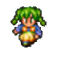 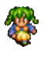 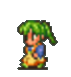 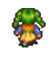 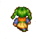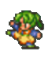 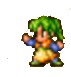 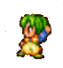 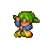 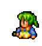 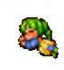
エンサガ
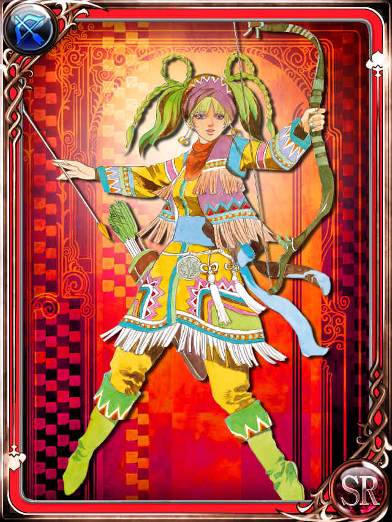
エンサガでは弓キャラとして実装。
原作のロマサガ2では公式イラストは無かったが、小林智美さんの描き下ろしイラストで実装された。
小林智美さん公式サイト
小林智美さんウィキペディア
エンサガでファティマが使用できる技は以下の通り。
| 使用可能技 |
|---|
| ビーストスレイヤー |
| でたらめ矢 |
| アローレイン |
| バラージュシュート |
旧インサガ
ストーリーには登場するものの、キャラクタとしての実装は無し。
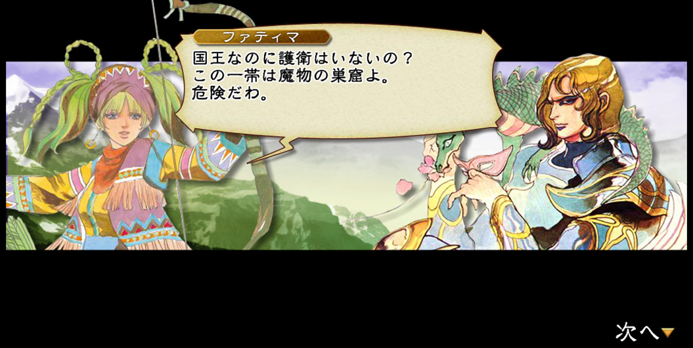
参考：なんかサイト
インサガEC
未プレイなのでよく知りませんが、オリジナルイラストで実装された模様。
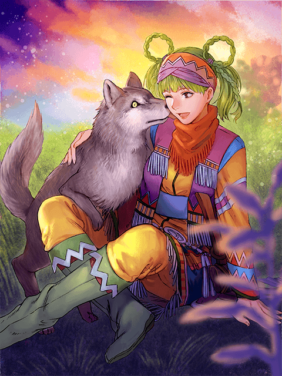
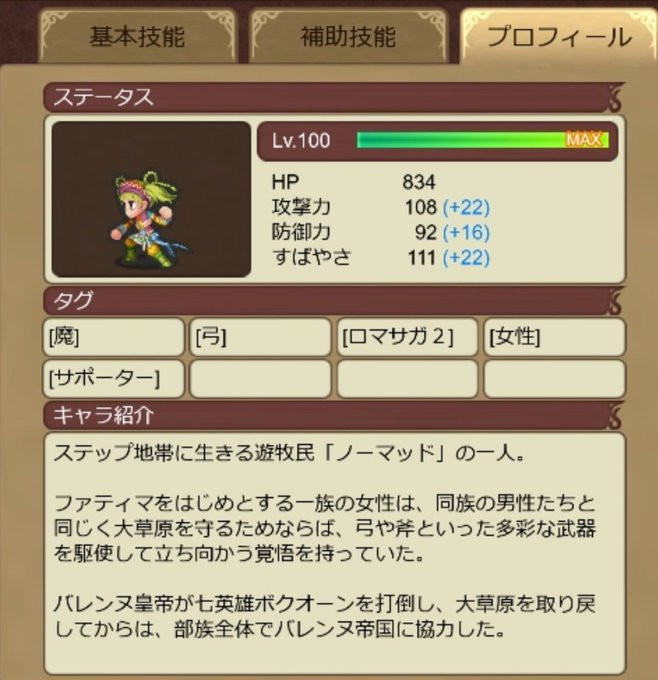
参考：なんかサイト【キャラ紹介】★４ ファティマ [魔][弓][ロマサガ２]
— インペリアル サガ エクリプス公式 (@imsaga_ec) March 7, 2020
ステップ地帯に生きる遊牧民「ノーマッド」の一人。ファティマをはじめとする一族の女性は、同族の男性たちと同じく大草原を守るためならば、弓や斧といった多彩な武器を駆使して立ち向かう覚悟を持っていた。 #インサガ #インサガEC pic.twitter.com/WETe4tpMWZ
ロマサガRS
Aスタイルで実装。イラストはエンサガと同様のもの。ドットはロマサガRS用に新規に作られているが、ロマサガ2のドットを踏襲して作られている。
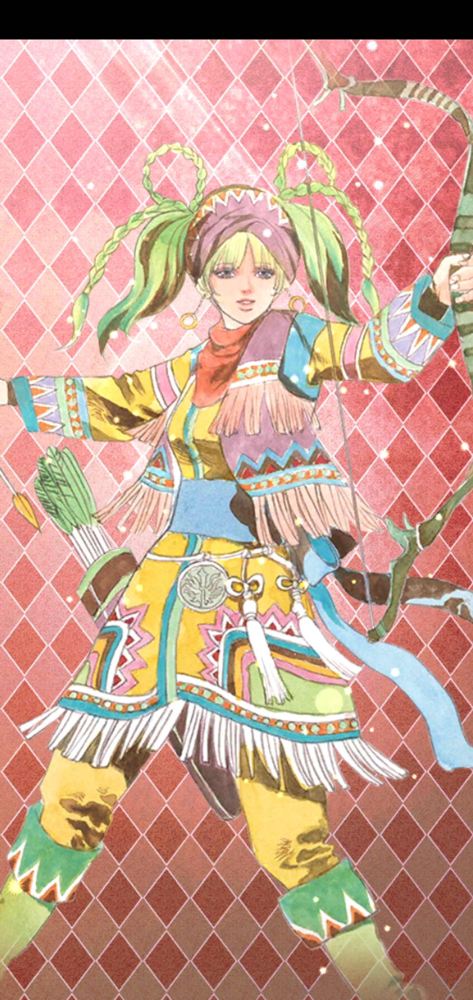
【新スタイル紹介】
— ロマンシング サガ リ・ユニバース公式 (@romasaga_rs) March 21, 2019
ファティマ（『ロマンシング サガ２』より）
ステップの遊牧民"ノーマッド（女）"の一人。
弓矢による遠距離攻撃を得意とする。
「思い切り走り回れる広い草原はないのか？」#ロマサガRS pic.twitter.com/xqC3hnwcoa
| 使用可能技 |
|---|
| 狙い射ち |
| ビーストスレイヤー |
| 瞬速の矢 |
ベスマ
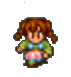 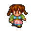 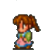 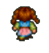 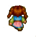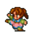 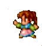 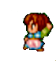 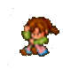 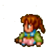
実装なし
アリア
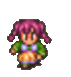 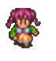 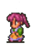 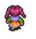 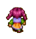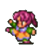 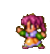 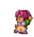 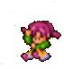 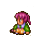 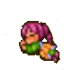
実装なし
ミズラ
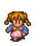 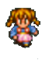 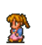 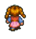 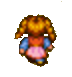実装なし
アズィーザ
実装なし
ドニヤ
実装なし
ノーズハトゥ
実装なし
シャハラザード
エンサガ

なぜか斧キャラ
エンサガシャハラザード参考
| 使用可能技 |
|---|
| ドライブエッジ |
| ヨーヨー |
| メガホーク |
| スカイドライブ |
参考：エンサガDB | 戦士一覧
参考：なんかブログ